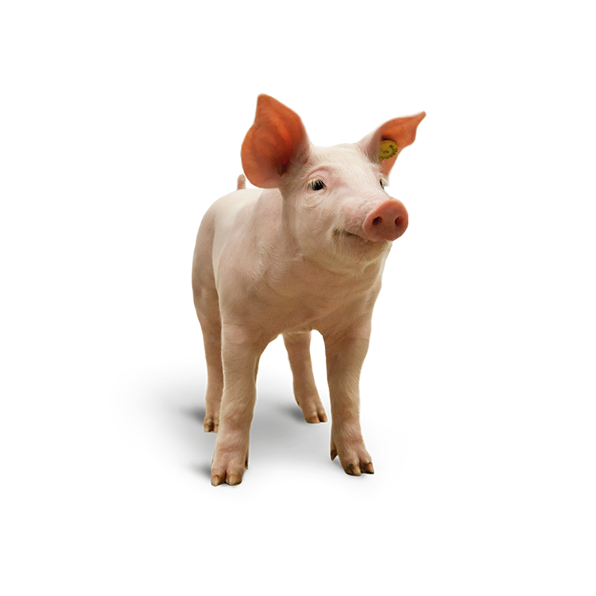
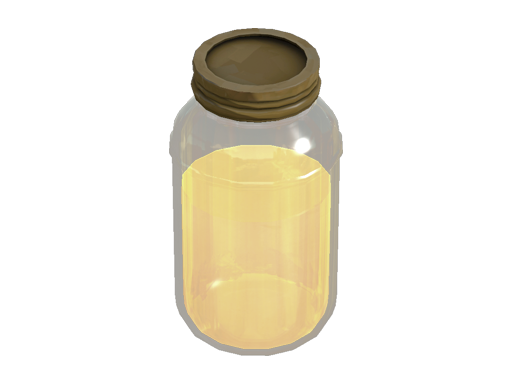

The Pigpiss Chronicles

What the hell is The Pigpiss Chronicles???
TPPC is a Half-life 2 map series I made
based on an inside joke me and my friend
made based on a video by Matt Rose.
We just found that the word sounded
funny and everything sprouted from there.
Eventually I got the idea to make a Half-life
2 map pack based on it. And so, TPPC was born.
You might not understand any of the jokes/references
in the game. But I've put it here on my website just
incase anyone would like to play.

Click the downloda now button to download
a zip containing TPPC, and click on the
how to install button to see instructions
on how to install TPPC if you don't know
already.
Download unavailable try again later
How to install?